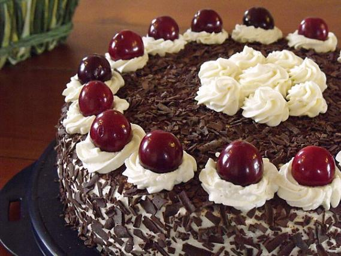
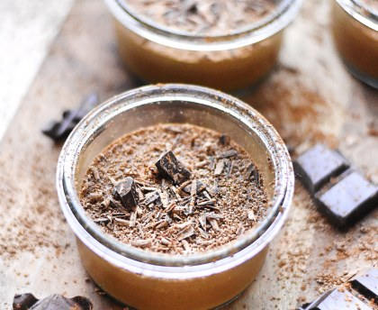
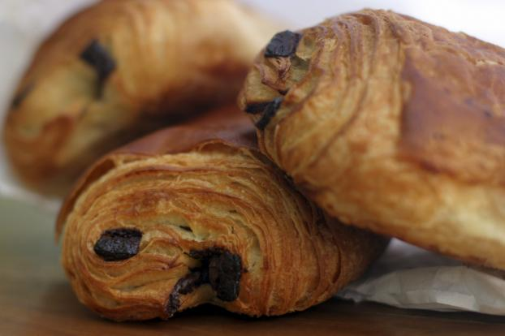
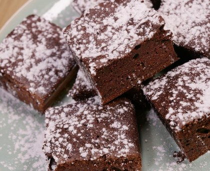
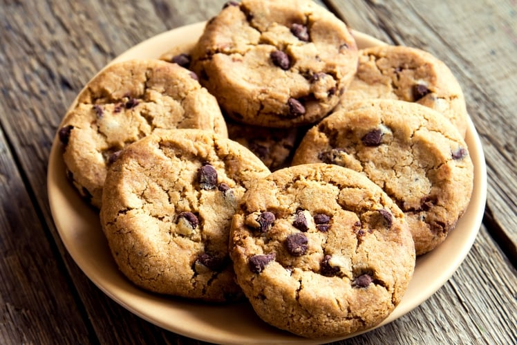
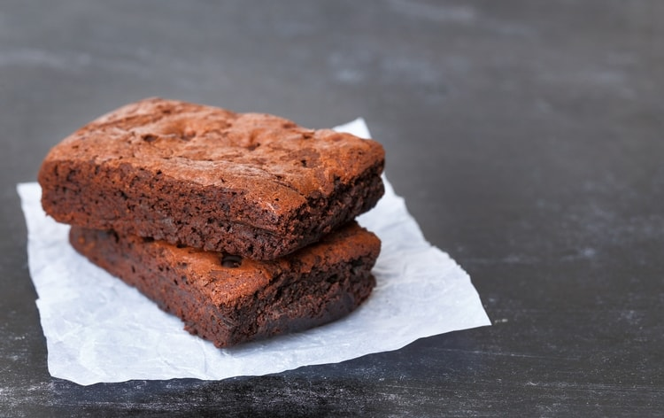
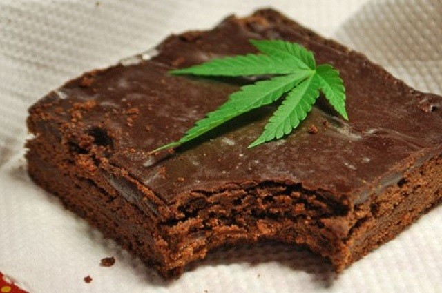
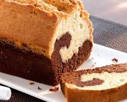

Le chocolat est un ingrédients incontournable de beaucoup de pâtisseries, cette page est dédiée a en montré divers
Forêt noire

Ingredients
- 6 oeufs (blancs et jaunes séparés)
- 150g de sucre en poudre
- 55g de farine
- 55g de maïzena
- 3 c a s de cacao en poudre
- 1 sachet de sucre vanillé
- 65 cl de crème fraîche entière très froide
- 1 bocal de cerises au sirop
- 75g de sucre glace
- Copeaux de chocolat
Préparation
Préchauffer le four à 150°C.
Dans un saladier, battre les jaunes d'oeufs, le sucre en poudre et le sucre vanillé jusqu'à ce que la préparation fasse un ruban. Tout en continuant de battre, ajouter peu à peu la farine, la maïzena et le cacao en poudre.
Dans un autre saladier, monter les blancs en neige très ferme avec un batteur électrique puis les incorporer petit à petit et très délicatement à la pâte.
Verser dans un moule à manqué beurré (en silicone pour moi), mettre et four et laisser cuire environ 40 mn.
A la sortie du four, laisser le biscuit 5 à 10 mn dans son moule puis le démouler et le laisser refroidir sur une grille.
Dans un grand saladier, battre la crème fraîche. Lorsque la crème commence à être ferme, verser doucement le sucre glace.
Verser le jus des cerises dans un bol et laisser les cerises s'égoutter.
Lorsque le gâteau est froid, le couper en 2 puis mouiller les 2 parties intérieures du biscuit avec le jus des cerises.
Poser la partie inférieure du gâteau sur un plat de service puis étaler une petite partie de la chantilly, disposer les cerises puis remettre un peu de chantilly.
Poser dessus la partie supérieure du gâteau et étaler le reste de chantilly sur les côtés et la surface du gâteau.
Mousse au chocolat

Ingrediants
- 3 oeufs
- 100 g de chocolat (noir ou au lait)
- 1 sachet de sucre vanillé
Séparer les blancs des jaunes d'oeufs.
Faire ramollir le chocolat dans une casserole au bain-marie.
Hors du feu, incorporer les jaunes et le sucre.
Battre les blancs en neige ferme
et les ajouter délicatement au mélange à l'aide d'une spatule.
Verser dans une terrine ou des verrines
et mettre au frais 1 heure ou 2 minimum.
Chocolatine / Pain au chocolat

ingrediants
- 500g de farine
- 220g de beurre pommade
- Barrettes de chocolat
- 40g de sucre semoule
- 1 œuf pour la dorure
- 28 cl de lait tiède
- 10g de levure boulangère fraîche ou sèche
- 2 c à c de sel fin
Dans le bol de votre robot, déposez la farine, le sucre, le sel, la levure et le lait. Pétrissez doucement, avec le crochet. Dés que la pâte commence à former une boule, arrêtez de pétrir et terminer à la main, pour former une boule.
Filmez la pâte et placez-la au frigo toute la nuit (ou au minimum 2h pour les personnes pressées).
Une fois la pâte reposée, farinez le plan de travail et étalez la pâte avec un rouleau à pâtisserie.
Une fois votre pâte étalée, placez le beurre de même consistance que le pâton au centre de celle-ci.
Repliez la pâte en portefeuille sur les 4 côtés, en faisant attention que le beurre reste bien au centre. Il doit être emprisonné dans la pâte.
Une fois repliée, la pâte doit former un rectangle.
Aplatissez dans la longueur pour que le beurre s'intègre à la pâte.
Puis repliez une nouvelle fois la pâte en portefeuille.
Puis filmez la pâte et placez-la au frigo une quinzaine de minutes au minimum.
Farinez de nouveau le plan de travail, et étalez la pâte une nouvelle fois dans sa longueur.
Repliez de nouveau en portefeuille (en trois).
Filmez de nouveau et placez au frigo au minimum 20 minutes.
Farinez de nouveau le plan de travail, et étalez la pâte une nouvelle fois dans sa longueur.
Pliez de nouveau en trois, en portefeuille et applatissez avec le rouleau pour souder les couches.
Filmez de nouveau et placez au frigo au minimum 1h.
Une fois reposée, étalez la pâte sur 3 à 4 mm d'épaisseur.
Coupez des bandes de pâte de la taille des barrettes en chocolat (dans la longueur).
Ensuite, placez 2 barettes de chocolat à chaque extrémité de la pâte et roulez la pâte comme un roulé.
Placez les pains au chocolat sur une plaque de four, filmez-les et laissez-les pousser (gonfler), dans la partie la plus chaude de la maison.
Pendant ce temps, préchauffez votre four à 180°C.
Une fois que les pains au chocolat ont doublé de volume, dorez-les avec un oeuf entier battu.
Une fois que les pains au chocolat ont doublé de volume, dorez-les avec un oeuf entier battu.
Enfournez-les pour 15 à 20 minutes de cuisson. Il faut qu'ils soient bien dorés.
fondant au chocolat

ingrediants
- g de chocolat à cuire
- 100 g de beurre doux
- g de sucre semoule
- 5 oeufs
- 4 cuillères à soupe de farine
Préchauffer le four à 180°C (thermostat 6).
Faire fondre le chocolat et le beurre au bain-marie à feu doux, ou au micro-ondes sur le programme "décongélation".
Pendant ce temps, séparer les jaunes des blancs d'oeuf.
Monter les blancs en neige ferme. Réserver.
Quand le mélange chocolat-beurre est bien fondu, ajouter les jaunes d’oeufs et fouetter.
Incorporer le sucre et la farine, puis ajouter les blancs d’oeufs sans les casser.
Beurrer et fariner un moule à manqué et y verser la pâte à gâteau.
Enfourner pendant 20 minutes.
Quand le gâteau est cuit, le laisser refroidir avant de le démouler.
Cookie

Ingrediants
- 1 oeuf
- 85 g de sucre
- 85 g de beurre doux
- 150 g de farine
- 100 g de pépites de chocolat
- 1 sachet de sucre vanillé (facultatif)
- 1 cuillère à café de levure chimique
- 1/2 cuillère à café de sel
Laissez ramollir le beurre à température ambiante. Dans un saladier, malaxez-le avec le sucre.
Ajoutez l'oeuf et éventuellement le sucre vanillé.
Versez progressivement la farine, la levure chimique, le sel et les pépites de chocolat. Mélangez bien.
Beurrez une plaque allant au four ou recouvrez-la d'une plaque de silicone. À l'aide de deux cuillères à soupe ou simplement avec les mains, formez des noix de pâte en les espaçant car elles s'étaleront à la cuisson.
Faites cuire 8 à 10 minutes à 180°C soit thermostat 6. Il faut les sortir dès que les contours commencent à brunir.
Brownie

Ingrediants
- 250 g de Chocolat noir
- 150 g de Sucre
- 150 g de Beurre
- 1 sachet de Sucre vanillé
- 60 g de Farine tamisée
- 3 Oeuf
- 1 pincée de Sel
Faites fondre le beurre dans une petite casserole sur un feu très doux et cassez ensuite le chocolat noir dans un saladier. Laissez le fondre doucement au bain-marie.
Plongez un pinceau dans le beurre fondu et badigeonnez votre moule à manqué. Préchauffez le four thermostat 6 (180°).
Mélangez le chocolat fondu avec le beurre. Hors du feu, ajoutez le sucre en poudre, le sucre vanillé puis les oeufs battus en omelette avec une petite pincée de sel. Ajoutez enfin la farine.
Versez dans le moule et enfournez pour 15 mn. Laissez reposer 5 mn dans le four éteint.
Laissez refroidir environ 1/2 heure, puis mettez au réfrigérateur au moins 2 heures. Démoulez le gâteau et découpez le en parts individuelles.
Space cake au chocolat
CETTE RECETTE COMPORTE DES PRODUITS ILLEGAUX DANS CERTAIN PAYS, DE CE FAIT VEUILLEZ VERIFIER SI VOUS ÊTES AUTORISÉ A LE CONFECTIONNER

Ingrédients
- 50 grammes de farine
- 100 grammes de beurre (50g de beurre ordinaire et 50g de beurre de cannabis)
- 3 oeufs
- 200 grammes de chocolat
- 100 grammes de sucre
- une cuillère à café de levure
Préchauffez votre four à 180°C.
Faire fondre le chocolat et le beurre dans une casserole à feu très doux (il ne faut que ça brûle au risque de perdre le THC présent dans le beurre)
Dans un saladier, ajoutez le sucre, les œufs, la farine. Mélangez et ajoutez le mélange chocolat beurre. Mélangez bien
Beurrez et farinez votre plat et versez la pâte à gâteau.
Faites cuire pendant 20-25 minutes environ. A la sortie du four, le gâteau peut ne paraître pas assez cuit, c'est normal, laissez le refroidir puis démoulez-le.
Marbré

Ingrediants
- 75 g de beurre mou
- 200 g de sucre
- 20 cl de lait
- 250 g de farine
- 3 oeufs
- 1 sachet de levure
- 100 g de chocolat au lait
Préchauffer le four à 180°C (thermostat 6).
Mélanger le beurre mou (et non fondu) avec le sucre.
Séparer le blanc du jaune de vos œufs et mettre les blancs dans le réfrigérateur.
Ajouter au mélange beurre-sucre les jaunes d’œufs, la farine, la levure et 15 cl de lait. Mélanger bien.
Laisser reposer le temps de monter les blancs en neige.
Incorporer les blancs en neige à la préparation.
Faire fondre la tablette de chocolat (cassée en petits carrés) avec 5 cl de lait au micro-ondes.
Séparer la pâtes en 2 : 1/3 – 2/3.
Dans le saladier avec 1/3 de la pâte, ajouter le chocolat.
Verser les 2 pâtes dans un moule rectangulaire préalablement beurré en alternant : nature et chocolat.
Essayer de finir par une couche de pâte nature. Enfourner 40 minutes.
Sortir le gâteau du four, le démouler et le laisser refroidir.